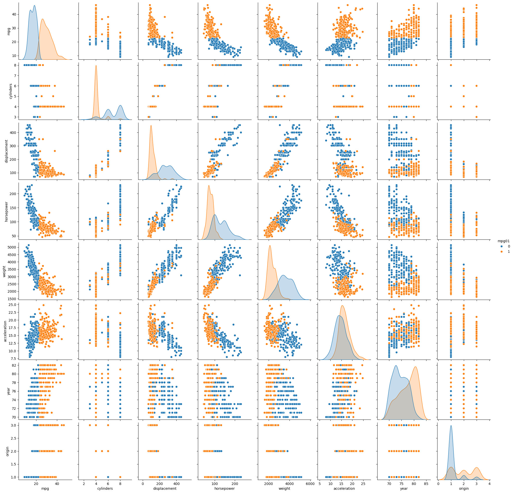

import pandas as pd
import numpy as np
import seaborn as sns
from ISLP import load_data, confusion_table
from sklearn.linear_model import LogisticRegression
from sklearn.discriminant_analysis import LinearDiscriminantAnalysis as LDA, QuadraticDiscriminantAnalysis as QDA
from sklearn.naive_bayes import GaussianNB
from sklearn.neighbors import KNeighborsClassifier
from sklearn.model_selection import train_test_split
from sklearn.preprocessing import StandardScaler
auto = load_data("Auto")
auto = auto.reset_index()
auto
|
name |
mpg |
cylinders |
displacement |
horsepower |
weight |
acceleration |
year |
origin |
| 0 |
chevrolet chevelle malibu |
18.0 |
8 |
307.0 |
130 |
3504 |
12.0 |
70 |
1 |
| 1 |
buick skylark 320 |
15.0 |
8 |
350.0 |
165 |
3693 |
11.5 |
70 |
1 |
| 2 |
plymouth satellite |
18.0 |
8 |
318.0 |
150 |
3436 |
11.0 |
70 |
1 |
| 3 |
amc rebel sst |
16.0 |
8 |
304.0 |
150 |
3433 |
12.0 |
70 |
1 |
| 4 |
ford torino |
17.0 |
8 |
302.0 |
140 |
3449 |
10.5 |
70 |
1 |
| ... |
... |
... |
... |
... |
... |
... |
... |
... |
... |
| 387 |
ford mustang gl |
27.0 |
4 |
140.0 |
86 |
2790 |
15.6 |
82 |
1 |
| 388 |
vw pickup |
44.0 |
4 |
97.0 |
52 |
2130 |
24.6 |
82 |
2 |
| 389 |
dodge rampage |
32.0 |
4 |
135.0 |
84 |
2295 |
11.6 |
82 |
1 |
| 390 |
ford ranger |
28.0 |
4 |
120.0 |
79 |
2625 |
18.6 |
82 |
1 |
| 391 |
chevy s-10 |
31.0 |
4 |
119.0 |
82 |
2720 |
19.4 |
82 |
1 |
392 rows × 9 columns
auto['mpg01'] = np.where(auto['mpg'] > auto['mpg'].median(), 1, 0)
sns.pairplot(auto, hue='mpg01')
<seaborn.axisgrid.PairGrid at 0x73ee4c894f50>

useful_features = [ 'displacement', 'weight']
scaler = StandardScaler()
scaler.fit(auto[useful_features])
X = scaler.transform(auto[useful_features])
X_train, X_test, y_train, y_test = train_test_split(X, auto['mpg01'], stratify=auto['mpg01'], random_state=42)
# X_train, X_test, y_train, y_test = train_test_split(auto[useful_features], auto['mpg01'])
lda = LDA()
lda.fit(X_train, y_train)
lda_pred = lda.predict(X_test)
confusion_table(lda_pred, y_test)
| Truth |
0 |
1 |
| Predicted |
|
|
| 0 |
42 |
1 |
| 1 |
7 |
48 |
qda = QDA()
qda.fit(X_train, y_train)
qda_pred = qda.predict(X_test)
confusion_table(qda_pred, y_test)
| Truth |
0 |
1 |
| Predicted |
|
|
| 0 |
45 |
1 |
| 1 |
4 |
48 |
lr = LogisticRegression(C=10e5)
lr.fit(X_train, y_train)
lr_pred = lr.predict(X_test)
confusion_table(lr_pred, y_test)
| Truth |
0 |
1 |
| Predicted |
|
|
| 0 |
44 |
3 |
| 1 |
5 |
46 |
nb = GaussianNB()
nb.fit(X_train, y_train)
nb_pred = nb.predict(X_test)
confusion_table(nb_pred, y_test)
| Truth |
0 |
1 |
| Predicted |
|
|
| 0 |
43 |
2 |
| 1 |
6 |
47 |
for i in range(1, 2):
print(i)
knn = KNeighborsClassifier(n_neighbors=i)
knn.fit(X_train, y_train)
knn_pred = knn.predict(X_test)
print(confusion_table(knn_pred, y_test))
print()
1
Truth 0 1
Predicted
0 43 12
1 6 37
print("LDA", (lda_pred == y_test).mean())
print("QDA", (qda_pred == y_test).mean())
print("NB", (nb_pred == y_test).mean())
print("LR", (lr_pred == y_test).mean())
LDA 0.9183673469387755
QDA 0.9489795918367347
NB 0.9183673469387755
LR 0.9183673469387755